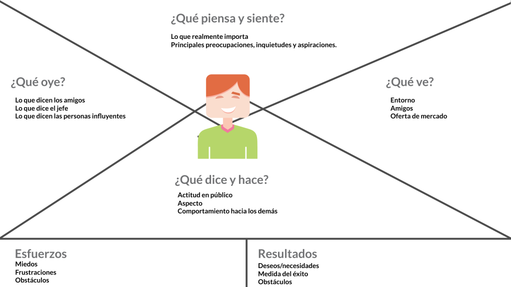

Uso responsable del testeo
Un prototipo no es el producto final. Es una representación básica que permite validar si la idea funciona. Puede ser un dibujo, una maqueta, una simulación digital o incluso una representación actuada.
El objetivo del prototipo es fallar rápido y barato. Cada error detectado en esta etapa evita problemas mayores en el futuro. El testeo implica observar cómo interactúan los usuarios con el prototipo. No se trata de explicarles cómo usarlo, sino de ver qué sucede naturalmente.
Diseño de una app móvil
- Se crea un prototipo en baja fidelidad (dibujos en papel o en Figma).
- Se muestra a 5–10 usuarios.
- Se les pide que intenten registrarse o hacer una compra.
- Se observa dónde se confunden.
- Se corrige antes de programar la app real.

Aumento de probabilidades de exito
Al crear versiones simples y probarlas con usuarios, se detectan errores, se validan supuestos y se mejora la propuesta antes de invertir grandes recursos. Esta etapa impulsa el aprendizaje continuo, reduce riesgos y asegura que la solución final responda verdaderamente a las necesidades del usuario.